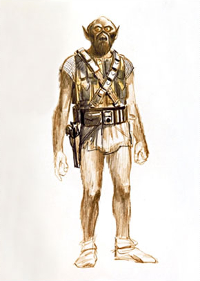

Резюме
Чубакка (англ. Chewbacca, сокращённо Чуи) — мужчина, вуки, который был известен, как талантливый пилот и механик. Во времена Галактической Империи Кашиик был порабощен, и Чубакка среди прочих вуки был в качестве раба отправлен на рудники. В это же время в Академии учился Хан Соло, не переносивший рабства. Когда Соло увидел издевательства надсмотрщиков над вуки и, в частности, над Чубаккой, кореллианец не смог вынести этого и спас вуки, за что был выгнан из Академии. Впоследствии Хан Соло стал лучшим другом Чубакки. Чубакка имел перед Ханом «долг жизни».
-
- Чубакка родился на Кашиике приблизительно в 200 ДБЯ, был сыном Аттичиткука. В течение первых лет Чубакка жил на Кашиике, но в отличие от многих других, не покидающих Кашиика вуки, Чубакка был поглощен страстью к приключениям. Впервые Чуи путешествовал к отдаленным и опасным низким уровням огромных лесов Кашиика.
-
- Он жил со своей семьей в Рвукррорро. Чуи и его отец несли ответственность за создание многих деревень на Кашиике за несколько десятилетий до битвы за Набу и освоение новых пространств на планете, колонизации лун Кашиика и системы Аларис-Прайм, где столкнулись с Торговой Федерацией. В это время Чубакка впервые встретил джедаев — Квай-Гона Джинна и Оби-Вана Кеноби, которым было поручено урегулировать конфликт на Аларис-Прайме. Чубакке удалось с помощью Джинна привести в порядок дела в колониях и восстановить потерянное в ходе конфликта имущество вуки.
- Чубакка был крупным игроком в битве при Кашиике, наблюдая за сражением между 41-ым корпусом Великой армии Республики и боевыми дроидами вместе с Йодой и Тарффулом. Чубакка вместе с Тарффулом сопровождали генерала Квинлана Воса.
- После выполнения Приказа 66 Чуи помог Йоде ускользнуть от солдат-клонов и покинуть планету.
-
- Победа над КНС была праздником для народа вуки, но длился он недолго. Империя, появившись словно из ниоткуда, объявила на планете военное положение. Следуя совету лютых врагов вуки, трандошан, имперцы начали использовать вуки как рабов. Начинались Тёмные времена. После поражения КНС Чубакку чествовали как героя. Однако не все были счастливы возвращению воина — Хронк, один из родственников злополучного Тожжеввука, попытался убить Чуи. Оказавшиеся неподалёку штурмовики хоть и с трудом, но сумели остановить конфликт.
-
- Но когда-нибудь приходит время чёрной полосы в жизни. Чуи был пойман трандошанскими работорговцами по заказу Твррдко, до сих пор желавшего смерти сыну Аттичиткука. Ссох, лидер работорговцев, разработал систему, по которой вуки не смогут сбежать с его корабля. Будучи тонким психологом в вопросах взаимоотношений различных кланов вуки, он рассудил, что вуки из таких кланов будут сами препятствовать своим врагам в побеге. Когда Чубакка был брошен в камеру, несколько кланов вуки, в том числе Пуурргерр, Грробарр и Чеваппа сразу же начали расспрашивать о нём. Рассказывая, Чуи убедил других вуки, что лучше умереть на свободе, чем жить в рабстве. С помощью фузионного резака Чубакка прорезал выход из тюрьмы, и вуки смогли бежать. После рукопашного боя с вуки Ссох стал единственным выжившим трандошаном-работорговцем, после чего Чубакка вырвал его конечности из суставов.
- После этих событий Чубакка часто помогал рабам вуки, захваченным Империей или трандошанами. Однажды Чубакка освободил вуки во время их передачи от трандошан к имперскому командиру Никласу.
-
- Долг жизни обязывал вуки следовать за Ханом куда угодно и помогать ему во всём. Много раз друзья пускались в охоту за сокровищами или занимались перевозкой спайса. Когда Соло удалось выиграть «Тысячелетний сокол», вуки попросил кореллианца о поездке на Кашиик. Там Чубакка женился на Маллатобак, и у них родился сын, Лумпаваррумп.
-
- Ход событий привёл друзей на Татуин, в Мос-Эйсли. Там, в кантине Чалмуна, Чуи встретил старого знакомого — Оби-Вана Кеноби. Неизвестно, помнил ли вуки их давнюю встречу, или память о Йоде оставила в Чуи хорошее впечатление от джедаев. Так или иначе, именно с разговора с Чубаккой Бен Кеноби и Люк Скайуокер начали свое путешествие на Альдераан.
- Во время полёта Чуи решил сыграть с C-3PO в дежарик. Дроид сумел обставить вуки, из-за чего тот сильно разозлился. Конфликт разрешил Хан: он посоветовал протокольному дроиду подыграть Чубакке, поскольку «дроиды не отрывают другим конечности, когда проигрывает, а вуки этим знамениты».
- Достигнув места нахождения планеты, члены экипажа «Тысячелетнего сокола» увидели, что от Альдераана осталось лишь астероидное поле. Когда «Сокол» попал в луч захвата Звезды Смерти, они спрятались от имперцев в тайнике корабля. Затем, для спасения принцессы Леи, Люк Скайуокер придумал план: он и Хан, надев костюмы штурмовиков, проведут Чубакку, как пленника, в тюремный отсек, где и находилась цель их поездки. Последовавшие за этим приключения в мусорном отсеке и встреча с отрядом штурмовиков не очень понравились вуки. После побега со Звезды Смерти Хан хотел поскорее расплатиться с Джаббой. Чуи последовал за своим другом, хоть и не приветствовал такое решение.
- Но битва при Явине так и не прошла мимо контрабандистов. Хан, в котором совесть победила долг, решил помочь повстанцам. Контрабандисты нанесли Империи удар с тыла: им удалось повредить истребитель Дарта Вейдера и спасти Люка от гибели. После сражения, увенчавшегося взрывом Звезды Смерти и ошеломительной победой Альянса, кореллианин, вуки и молодой джедай были награждены медалями Героев Альянса.
-
- Пребывание на базе Альянса «Эхо» не было скучным для вуки — он ремонтировал «Тысячелетний сокол», пока Соло искал пропавшего в снегах Люка Скауйокера. Когда юный джедай был найден, Лея на глазах Чуи и Соло поцеловала Люка, чтобы унизить Хана. Впрочем, неурядицы пришлось быстро забыть — на Хот прилетел имперский дроид-разведчик. Хан и Чуи сумели подобраться к дроиду незамеченными довольно близко, но тот всё-таки их обнаружил и отправил на «Мститель» сигнал раньше, чем был уничтожен. Вейдер без колебаний решил начать атаку на Хот.
- Чуи помогал Хану эвакуировать принцессу Лею с Хота. Когда «Сокол» не смог прыгнуть в гиперпространство и Хану пришлось вывести корабль в астероидное поле, вуки пытался починить гипердрайв.
- Помещение Соло в карбонит ужаснуло Чубакку. Его друг оказался в безвыходной ситуации, и Чуи впервые в жизни не смог ему помочь. В отчаянии и ужасе он завыл.
- Но дальнейшие события круто перевернуло ход дела. Лэндо, взвесив все за и против, решил помочь повстанцам. Он освободил их, но Чуи чуть было его не придушил.
- Решив поверить бывшему контрабандисту, Чубакка последовал за ним до «Тысячелетнего сокола», на котором беглецам удалось не только слинять от опасности Империи, но и спасти Люка Скайуокера.
-
- Следующий год был преисполнен попыток найти Хана Соло. Чубакка и Лэндо Калриссиан забыли прежние обиды и стали друзьями. Год, который они искали Соло, был преисполнен приключений. Чуи участвовал не только в обыкновенных заданиях Альянса, но также в спасении Люка Скайуокера от опасной болезни, раскрытии тайны Города мечты и уничтожение нового имперского супероружия — «Таркина».
-
- Чубакка принял приказ Хана беречь принцессу Лею очень серьёзно, ни на шаг старался не отходить от неё, когда они были вместе. Пытаясь найти того, кто выставил награду за голову Люка, Чуи и Лея в образе охотников Снуува и Боуш проникли в цитадель «Чёрного солнца» — дворец принца Ксизора. Тот принял их радушно, а Лея ему так понравилась, что он пытался соблазнить её своими речами, подкреплёнными феромонами, чем вызвал гнев вуки. Он не смог освободить девушку из под влияния фаллиена, но получил всю нужную информацию по тому, кто охотился на Скайуокера: охота на джедая была организована фоллинским принцем, чтобы отомстить Дарту Вейдеру за гибель своей семьи.
- Чубакка смог встретиться с Люком, и вместе они образовали спасательный отряд, вместе с Лэндо и Дашем Рендаром. Они смогли проникнуть в дворец Ксизора через канализацию и освободить Лею. Следуя к «Соколу», друзья столкнулись с многочисленными слугами фаллиена и с самим Ксизором, но сумели улизнуть. Термозаряд, брошенный под дворцом Калриссианом, подорвал здание, однако Ксизор сумел бежать. Он погиб в своём Орбитальном дворце, проигнорировав предупреждение Вейдера касательно обстрела «Тысячелетнего сокола», за что ситх приказал «Палачу» атаковать судно фоллина.
- После гибели Ксизора, Чуи вновь объединился с Лэндо, так как тому, Лея, Люк и двух дроидам была нужна помощь.
-
- В 8 ПБЯ Чубакка со своим сыном охотились на Корусанте за ворами, которые украли у Хана датапад. Во время погони сын Чуи и его жена были вновь похищены. Когда Чуи освободил своего отпрыска, то узнал, что грабители хотят убить лидеров Новой Республики. Чуи и Лумпа проникли на базу воров, где обнаружили, что преступники промывают мозги Малле. В гневе Чуи напал на воров и освободил жену.
- В этом же году Чуи сопровождал Хана и Лею на Татуин, где они должны были достать утерянную альдераанскую картину, в которой были спрятаны тайные коды повстанцев.
-
- В 25 ПБЯ Хан, Чубакка и Энакин полетели на Сернпидаль по просьбе Лэндо Калриссиана. По прибытии к ним обратился один старик, утверждавший, что Добидо, небольшой спутник Сернпидаля, приближается к планете и грозит с ней столкнуться. Это событие вызвало панику у жителей Сернпидаля. Была необходима грамотная, организованная эвакуация.
- Хан и Чубакка смогли погрузить на «Сокол» столько существ, сколько корабль мог в себя поместить. Энакин в этот момент пытался вести переговоры с мэром Сернпидаль-Сити, чтобы тот выделил больше кораблей для спасения жителей.
- Энакин рассчитал, что Добидо упадёт на Сернпидаль через семь часов. Это было частью тактики «Ядро Йо’ганда» — легендарной военной тактики юужань-вонгов, которая предполагала уничтожение вражеского мира при помощи довина-тягуна, который находился в центре планеты.
- Хан сумел схватить сына, и тот, придя в себя, сразу бросился с отцом на помощь вуки. Корабль приблизился к Чубакке, но находившееся рядом здание обрушилось, и обломки полетели в сторону «Сокола». Не сумев удержать корабль в безопасном положении, Энакин, сидевший за штурвалом, зная, что это будет предательством своего друга и защитника, но не видя другого выхода, поднял уже скрипящий от перегрузок корабль в космос.
- Чубакка понимал, что это приключение станет для него последним. Он видел, как «Тысячелетний Сокол» удаляется от Сернпидаля прочь, пытаясь спастись. Вуки не испытывал обиды или ужаса — он принял свою судьбу спокойно, без колебаний. И, повернувшись лицом к горящей луне, летевшей на сумасшедшей скорости на поверхность планеты, весь в крови и ранах, но спокойный и наполненный отваги, Чубакка взглянул в глаза смерти и издал громкий, наполненный бесстрашия и ярости, вызывающий крик воина-вуки.
Языки
Умения
Характер
Очень, очень хороший мальчик. Вежлив, правдив, скромен, добр. Слушает маму, каждое утро делает зарядку. Характер очень мягкий. Подробнее
Статьи
Не умеет писать
Интересные факты:
- 
Памятный голос Чубакки разработал Бен Барт, который был звукодизайнером для всех шести фильмов. Он смешал разные звериные рычания, отвечающие разным эмоциям, включая медведей, тигров, верблюдов, моржей и барсуков. Наиболее значительным из этих голосов был голос чёрного медведя Тарика, который, к сожалению, умер от сердечной недостаточности в 1994 году.
Образ Чуи был частично срисован с собаки Джорджа Лукаса по кличке Индиана.
Во время производства «Новой надежды» многие из творцов образа Чубакки, да и не только они, были обеспокоены отсутствием у вуки каких-либо штанов.